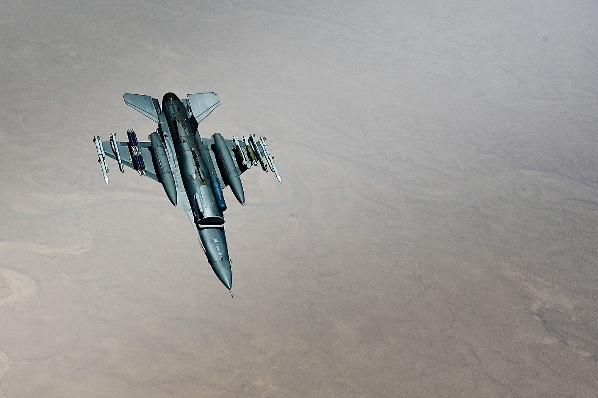

Welcome to the F-16 Fighting Falcon
The F-16 Fighting Falcon is one of the most iconic and widely operated combat aircraft ever built. First flown on January 20, 1974, the F-16 was designed to be a lightweight, highly manoeuvrable air superiority fighter that could outperform any other fighther jet in a dogfight. Over the five decades since its introduction, it has evolved into a true multirole platform, equally capable of air-to-air combat, precision ground attack, close air support, and electronic warfare. With over 4,600 aircraft built and service in more than 25 nations, the F-16 holds the record as the most produced Western jet fighter and most exported western Fighter Jet of the fourth generation.
What made the F-16 revolutionary was not just its performance, but the engineering philosophy behind it. It was the first production fighter to use a relaxed static stability design, meaning it is inherently unstable in flight and requires a fly-by-wire flight control computer to keep it airborne at all times. This instability, which would make the aircraft unflyable without computer assistance, is precisely what gives the F-16 its extraordinary agility. The aircraft can pull up to 9G in sustained turns — enough to cause a pilot to briefly lose consciousness if not protected by a specialised g-suit and controlled breathing technique. (NOTE: Modern F-16 have a GCAS system which recovers the plane in the case of the pilot losing consciousness during high G manoeuvers).
Explore This Website
Use the navigation bar above or the links below to explore every aspect of the F-16:
- History & Development – How the F-16 came to be, from the Lightweight Fighter program to today.
- Design & Technology – The revolutionary engineering features that made the F-16 a game changer.
- Variants & Upgrades – From the original F-16A to the Block 70/72 and the F-21.
- Combat History – The F-16’s proven record in air-to-air and air-to-ground operations.
- Global Operators – The nations that fly the F-16 and how they use it.
- Aircraft Diagram – Interactive diagram of the F-16’s key components.
- Feedback Form – Questions or comments? Get in touch.
Why the F-16 Matters
The F-16 changed the way the world thinks about fighter aircraft design. Before it, the dominant philosophy was that bigger, heavier, and more powerful meant better. The F-16 proved the opposite: a small, agile, and affordable fighter, built around the pilot and equipped with the best available avionics, could outperform and outmanoeuvre much more expensive opponents. Its influence can be seen in virtually every modern lightweight fighter designed since the 1970s, including aircraft as diverse as the Swedish Saab Gripen and the Chinese J-10.

An F-16C Fighting Falcon in flight — over 4,600 aircraft built across more than five decades of production.